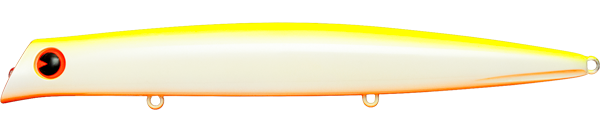
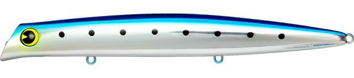
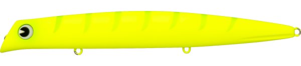
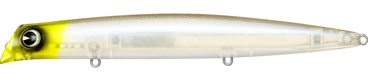

コモモSF-155
（komomo SF-155）
コモモSF-155はima（アイマ）のシャローランナーです。
コモモシリーズ最大の155mm。水面直下から50cmをゆっくり泳がせられるシャロー性能と、なめらかでナチュラルなアクションはそのままに、MRDシステムで立ち上がりも良くなっています。落ち鮎やボラなど、大型ベイトパターンのパイロットルアーとして使えます。

画像出典:ima公式HP
スペック
- メーカー
- ima（アイマ）
- タイプ
- フローティング（シャローランナー）
- 全長
- 155mm
- 自重
- 25g
- レンジ
- 5〜50cm
- フック
- #3
- リング
- #3
- アクション
- ウォブンロール
- ターゲット
- シーバス
- 価格
- 2,860円
▼今すぐチェック

コモモSF-155の特徴
コモモらしいシャロー性能を、シリーズ最大の155mmで
-
水面直下〜50cmをゆっくり引ける
コモモシリーズ特有のシャロー性能で、水面直下から50cmのレンジをゆっくり泳がせられます。浅い場所でも根掛かりを気にせず使えます。
-
MRDシステムで立ち上がりが良い
MRDシステムを搭載し、巻き始めからすぐに泳ぎ出します。なめらかでナチュラルなアクションはそのまま、扱いやすさが上がっています。
-
大型ベイトのパイロットルアー
155mmの大きなシルエットで、河川の落ち鮎や干潟のボラなど大型ベイトパターンの最初の1本として使えます。
コモモSF-155の使い方
基本はスローのただ巻き。水面直下〜50cmをゆっくり引くだけで、ナチュラルなウォブンロールで泳ぎます。
流れのある場所ではドリフトも効果的。まずはSF-155でアピールしながら広く探り、反応が渋いときは控えめなアクションのカウンターモデルに持ち替えるのがおすすめです。
コモモSF-155の得意な状況
落ち鮎・ボラ・コノシロなど大型ベイトが入っている河川・干潟・河口。シャローで大きなシルエットを見せたいときや、大型ベイトパターンで最初に広く探りたいときに向いています。
ワンポイント
流れが速くて暴れすぎるときや、ピンポイントで流したいときは、アクションを抑えたコモモ155カウンターに持ち替えましょう。
コモモシリーズの使い分け
| モデル | 全長／自重 | 得意な場面 |
|---|---|---|
| コモモSF-125 | 125mm／18g | レンジ5〜50cm。シリーズの基準となるシャローランナー |
| コモモ125カウンター | 125mm／22g | レンジ30〜60cm。アクションを抑えた海水サスペンド |
| コモモSF-155 | 155mm／25g | レンジ5〜50cm。シリーズ最大のシルエットで大型ベイトに（本記事のモデル） |
| コモモ155カウンター | 155mm／29g | レンジ15〜60cm。SF-155より控えめなアクションで速い流れに |
| コモモII | 110mm／15g | レンジ0〜20cm。水面直下をスネーキングで強くかき回す |
コモモは、ナチュラルに泳ぐ「SF」、アクションを抑えた「カウンター」、水面直下を強く誘う「II」で性格が分かれます。ベイトの大きさでサイズを、流れの強さやベイトの元気さでタイプを選ぶのが基本です。
人気カラー
公式ラインナップから4色を紹介します（カラー名は公式の表記のまま）。

CBPチャートバックパール。濁りやローライトで視認性とアピールが欲しいときに。

ウミベイト海のベイトを意識したナチュラルカラー。干潟や河口のボラ・コノシロに。

マットチャートギーゴマット系のチャート。濁りでもシルエットをはっきり出したいときに。

CHテレサimaの人気カラー「テレサ」系。日中やローライトでアピールしたいときに。
画像出典:ima公式HP
コモモSF-155に似ているルアー
-
 コモモ155カウンター
ima
詳細はこちら＞
コモモ155カウンター
ima
詳細はこちら＞
全長155mm・自重29gの同シリーズ。アクションを抑えて、速い流れでピンポイントに流したいときに。
-
 コモモSF-125
ima
詳細はこちら＞
コモモSF-125
ima
詳細はこちら＞
全長125mm・自重18gの同シリーズ。ベイトがひと回り小さいときに。
-
 カゲロウ155F
メガバス
詳細はこちら＞
カゲロウ155F
メガバス
詳細はこちら＞
全長155mm・自重39gのシャローランナー。同じ155mmクラスで、もっと飛距離が欲しいときに。